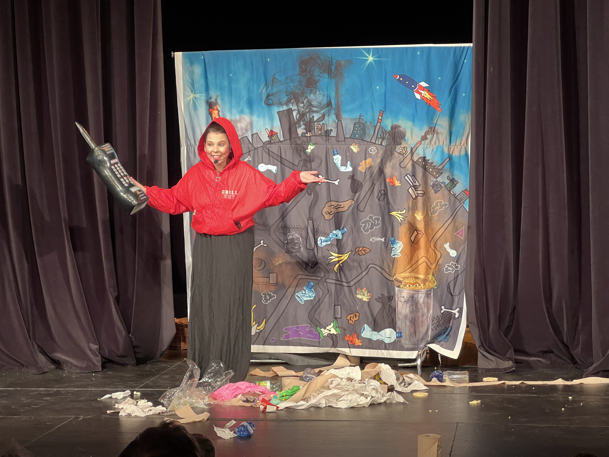
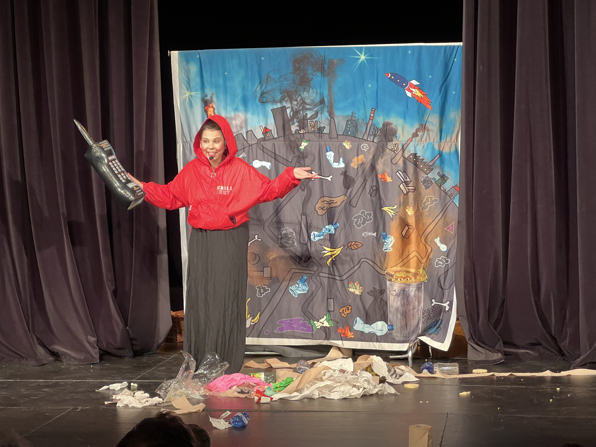

Muzikálové představení
Cestovadélko uvádí...
Jak Pimpilimpi a Pompolompo zachránili Zemi
Divadelní společnost Cestovadélko vám nabízí netradiční divadelní představení, které děti nejen pobaví, ale i poučí.
Tématem představení „Jak Pimpilimpi a Pompolompo zachránili Zemi“ je velice aktuální problém, a to nakládání s odpady.
Mimozemšťané Pimpilimpi a Pompolompo z planety Pumpulumpu přiletí na Zemi, která má problém s odpadky. Naučí lidi třídit odpad, utkají se s padouchem Špínachňapem, který touží, aby Zemi odpadky úplně zavalily a vysvětlí, že se ze starých věcí dají vyrobit nové. Prostřednictvím veselých písniček si děti lehce zapamatují, jaký odpad, do které sběrné nádoby patří a že se mají starat o pořádek kolem sebe.
 

Jak Pompolompo poznal lidské tělo
Divadelní společnost Cestovadélko vám nabízí netradiční divadelní představení, které děti nejen pobaví, ale i poučí.
Tématem představení „Jak Pompolompo poznal lidské tělo“ je muzikálová pohádka, ve které je spousta veselých, edukačních písniček.
Mimozemšťané Pimpilimpi a Pompolompo z planety Pumpulumpu přiletí na Zemi, protože slyšeli volání o pomoc. Na planetě Zemi se seznámí s kostrou, srdíčkem a mozkem. Stanou se přáteli a dozví se o nich spoustu věcí.
Prostřednictvím veselých písniček si děti lehce zapamatují, jaké má člověk v těle orgány a jak fungují. Dozví se, že musí jíst zdravé věci a dodržovat správnou hygienu.
Kačenka má ráda zimu (hrajeme Listopad až Leden)
Divadelní společnost Cestovadélko vám nabízí netradiční divadelní představení, které děti nejen pobaví, ale i poučí.
V představení „Kačenka má ráda zimu“ se děti formou zábavného muzikálu seznámí se všemi zimními svátky od sv. Martina až po oslavy Nového roku, dozví se, jaké tradice se dodržují, přivítají Martina na bílém koni, popovídají si s Mikulášem, budou čekat na Ježíška, rozbalí si dárečky pod stromečkem, zopakují si všechny zimní sporty a zazpívají si veselé písničky.